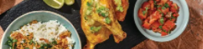

Hainanese-Style Chicken Rice

Ingredients
Method
-
Preheat the oven to 240°C/220°C fan-forced. Season the half chicken with salt and pepper. In a large frying pan,
heat a drizzle of olive oil over a medium-high heat. When the oil is hot, cook the chicken, skin-side down, until
browned, 4-5 minutes each side. Transfer to a lined oven tray, skin side-up, and roast until cooked through, 25-30
minutes. Set aside to rest for 5-10 minutes. TIP: Chicken is cooked through when it's no longer pink inside.
-
While the chicken is roasting, heat a drizzle of olive oil in a medium saucepan over a medium heat. Cook the
lemongrass ginger paste until fragrant, 1 minute. Add the water and chicken-style stock powder. Bring to the boil.
Add the jasmine rice. Stir, cover with a lid and reduce the heat to low. Cook for 12 minutes, then remove the pan
from the heat. Keep covered until the rice is tender and all the water is absorbed, 10-15 minutes. TIP: The rice
will finish cooking in its own steam, so don't peek!
-
While the rice is cooking, thinly slice the spring onion. In a small bowl, combine the spring onion, ginger paste
and a generous pinch of salt. Wipe out the frying pan and return to a high heat with olive oil (2 tbs for 2 people
/ 1/4 cup for 4 people). Heat until just smoking, 1 minute. Carefully pour the oil over the ginger-spring onion
mixture. Stir to combine. TIP: The hot oil will bubble up and cook the ginger.
-
Finely chop the long red chilli (if using). Roughly chop the tomato and coriander. Slice the lime into wedges. In
a medium bowl, combine chilli, tomato, a squeeze of lime juice and 1/2 the coriander. Season to taste. TIP: Use as
much or as little chilli as you like!
-
While the chicken is resting, roughly chop the baby broccoli and Asian greens. Return the frying pan to a
medium-high heat with another drizzle of oil, if needed. Cook the baby broccoli until tender, 5-6 minutes. Add the
Asian greens and cook, until just wilted, 1-2 minutes. Remove from the heat. Add the oyster sauce and toss to
combine. Transfer to a serving plate.
-
Cut the chicken in half, then spoon the ginger-spring onion sauce on top. Top the rice with the crispy shallots
and remaining coriander. Bring the Hainanese-style chicken, rice, greens and tomato salad to the table. Serve with
any remaining lime wedges.